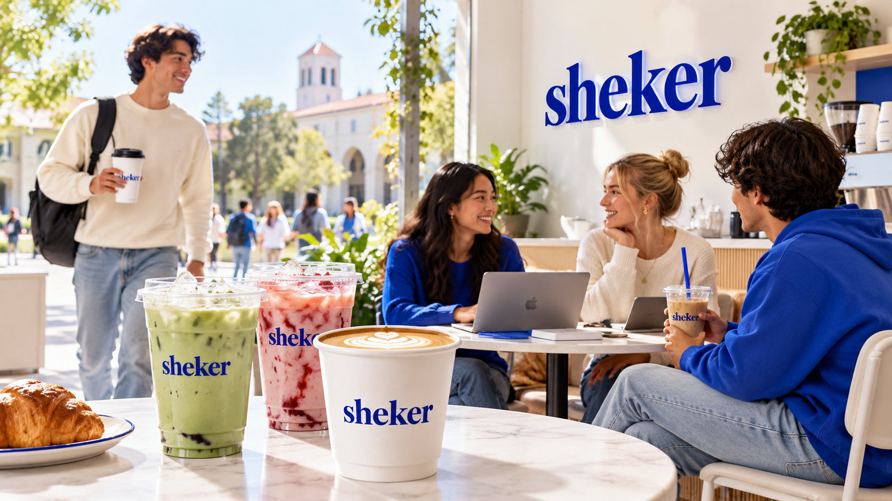

Our place
About Sheker
A coffee spot inside Astana IT University, created around quick service, bright drinks and a recognizable blue identity.
Coffee between classes.
Sheker is a convenient campus stop where students can meet friends, work on assignments or pick up a drink before the next class.
The website keeps the brand's blue color, white space and drink-focused visuals, while using a simple structure that is easy to understand and defend.

Fresh choice
Classic coffee and modern cold drinks in one menu.
Campus mood
A simple place for short breaks and student meetings.
Recognizable style
Bright royal blue, white backgrounds and colorful drinks.